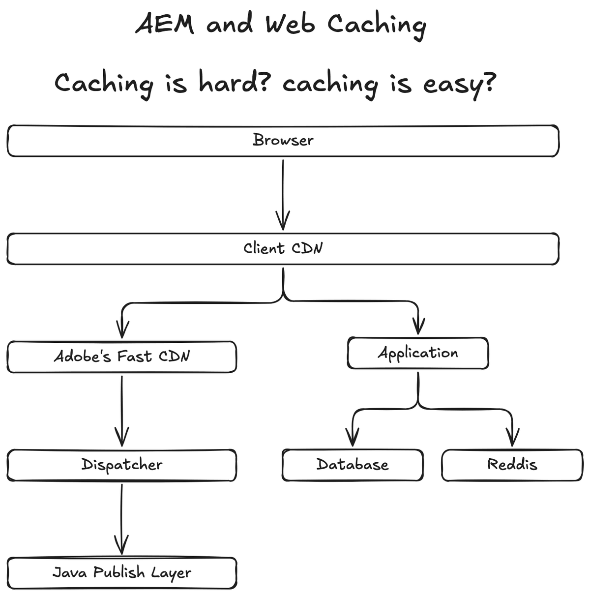

First published as a LinkedIn video on September 1, 2025, with the diagram drawn live. Rewritten for this site in October 2026, with Adobe's documentation checked again.
What I checked again in October 2026
Three things add to what I said on camera, so here they are before the walkthrough.
- In the video I said the dispatcher ignores whatever cache headers the publish layer sends. That's how it behaves out of the box. Adobe's caching page for AEM as a Cloud Service adds that the dispatcher also respects those expiration headers when
enableTTLis turned on in its configuration. - The same page recommends
stale-while-revalidateandstale-if-error, the background refresh I talk about in part 4, and suggests a 30-minutestale-while-revalidateon all cache control headers as a starting point. - My own newer work added a layer. AEM Edge Functions run code on Adobe's CDN, after the CDN cache and before your backends, and they have a fetch cache of their own. In my demo, the function turns that cache off, and a personalized page is never stored by a shared cache:
// "pass" keeps the function's own fetch cache out of the picture. Edge Delivery // already caches at the origin and the CDN caches in front of the function, and // neither of those would purge this third copy when content changes. const res = await fetch(upstream, { cacheOverride: new CacheOverride('pass') }); // A page with someone's name in it must never be stored by a shared cache. if (session.user) headers.set('cache-control', 'private, no-store');1. A typical AEM production setup, from the browser down to publish
A few months before this video, one of my clients had a conversation about caching. Someone said caching is really hard and complicated. Someone else said caching is really easy. I wanted to break that conversation down for them at the time, but it wasn't the right moment. This is that breakdown.
I drew it from the requester's side, the way a request travels. These days a browser typically goes to a CDN first. That first CDN hosts your certificate, and it's often the client's own. Security teams love their WAF rules and aren't always sure how Adobe's CDN works, so most of the time you end up with a CDN in front that isn't Adobe's native one.
Behind it sits Adobe's CDN, which is Fastly. Adobe documents how to put your own CDN in front of Adobe's. On camera I first said to CNAME one CDN to the other, then corrected myself: you don't CNAME, you set Adobe's CDN as the origin of your CDN. Follow Adobe's instructions, including the edge key header (X-AEM-Edge-Key), so it stays locked down.
Under Adobe's CDN is the dispatcher, which matters a lot to those of us who have been doing AEM forever. Under that is the Java publish layer. That's the typical setup. From here I go bottom up, because the bottom is where the headers start.

Watch this part0:00 The debate0:40 Drawing a typical AEM production setup
2. The Java publish layer doesn't cache, but it sets the headers
In the Java layer we have the publish server. We haven't cached things here for a long time, especially on AEM as a Cloud Service, where everything is containerized. It's just not recommended anymore, and more modern architectures solve the same problem. I remember caching here ten years ago for ecommerce, because there was no better place for it at the time.
This layer still does something very important. The publish layer can set the Cache-Control response header, and maybe Surrogate-Control too. That matters because the dispatcher might pass those headers on, or it might override them.
For headless AEM, content fragments and GraphQL let you set those cache headers yourself. Adobe's persisted queries documentation lists them: Cache-Control max-age for the browser, and Surrogate-Control max-age, stale-while-revalidate and stale-if-error for the CDN. Assuming the dispatcher passes them along, they reach every tier above.
Watch this part2:04 The Java publish layer sets the headers2:52 Cache headers for headless AEM
3. The dispatcher caches by its own .any rules and can set new headers
The dispatcher is next. It's very important for those of us who've been doing AEM forever. Unlike everything above it in the stack, it ignores whatever the publish layer says about caching. Its caching logic is configured in the dispatcher's .any files, which is fantastic.
It does get a say in the headers it sends up. It can set its own response headers for the tier above, or it can pass the publish layer's headers along without setting or unsetting anything. And as those of us who've used the dispatcher forever know, it caches the headers too, along with the content. The dispatcher was certainly great for its time.
Setting headers at this tier looks like this. It's the example from Adobe's caching page, an Apache mod_headers rule in the dispatcher configuration that gives the browser and the CDN different lifetimes:
<LocationMatch "^/content/.*\.(html)$"> Header set Cache-Control "max-age=200" Header set Surrogate-Control "max-age=3600" Header set Age 0</LocationMatch>The browser keeps the page for 200 seconds and Adobe's CDN for an hour. The header relay in part 5 uses these two values.
Watch this part3:04 The dispatcher and its .any rules
4. Adobe's CDN reads Surrogate-Control and serves stale while it checks
Next is Adobe's CDN. It respects a header called Surrogate-Control, a response header meant for the CDN. If you set Surrogate-Control at the dispatcher, Adobe's CDN absolutely respects it. It respects Cache-Control as well. So instead of a .any file, this layer is configured by the response headers from the two layers below it.
Adobe's CDN also does something I found really cool, and I've always loved this feature: it checks for staleness in the background. Once a cached response goes stale, and as long as you've allowed it, the CDN still returns the cached copy right away. Then it makes its own request to the dispatcher and fetches fresh data. Say that takes a second. The cache is refreshed without the browser, or anyone, ever seeing it. Response times stay fast.
The setting behind it is stale-while-revalidate, defined in RFC 5861. Drag the slider to change how old the cached copy is when a request arrives. The result says what the CDN does and whether the browser waits. With these values, a page can be served up to 30 minutes past its lifetime, and no reader ever waits for the refresh:
- Fresh, up to 5 minutes old. The CDN answers from cache. The dispatcher isn't contacted.
- Stale, up to 30 minutes past that. The CDN answers from cache right away, then asks the dispatcher for a fresh copy in the background. The next visitor gets the fresh one.
- Older than that, or no stale-while-revalidate. The request waits while the CDN fetches from the dispatcher.
Browser waits
CDN to dispatcher
Watch this part4:01 Adobe's CDN and Surrogate-Control6:14 Serving stale while the CDN refreshes
5. Every layer respects the one below and can override it for the one above
The client CDN is similar. It can override what it receives, and if it doesn't, it respects whatever the layer below sent. Adobe's caching page notes that Surrogate-Control applies to the Adobe-managed CDN, and a customer-managed CDN may need a different header depending on the provider. The browser is the last cache, and it respects the same Cache-Control header. If it receives Cache-Control: public with a max-age, the browser absolutely looks at that and works out what to do.
Long story short: every CDN respects the cache control of the layer below it, and has the ability to override it for the layer above. This is where it gets complicated. It can be really simple: the Java layer's header passes through all the way to the browser. Or the dispatcher changes it, then Adobe's CDN changes it again, then the client CDN changes it again, and the browser sees whatever came out last. Whether you should pass it straight through depends on your requirements, and that's a topic for another day.
Here is that rule on one page. Response headers travel up from the Java publish layer at the bottom to the browser at the top. Each layer in the middle has a switch: pass the header on, or change it. Set every switch to pass it on and you get the simple design; flip more of them and the result says which layer ended up deciding how long the browser keeps the page. Each layer also shows the two things I document for it: what it does, and what it returns to the layer above.
-
Browserlast cache
DoesCaches the page for 200 seconds, from
Cache-Control.ReturnsThe page to the reader.
-
Client CDNAkamai, Azure Front Door, whatever is in front
DoesCaches for 200 seconds, from
Cache-Control.Returns
Cache-Control: max-age=200 -
Adobe's CDNFastly
DoesCaches for 3600 seconds, from
Surrogate-Control.Returns
Cache-Control: max-age=200 -
Dispatcher.any files
DoesCaches the page and its headers by its
.anyrules, then sets its own headers.Returns
Cache-Control: max-age=200Surrogate-Control: max-age=3600 -
Java publish layerno caching here, sets the first header
DoesRenders the page. Caches nothing.
Returns
Cache-Control: max-age=300
As shown: the dispatcher replaces the publish layer's header with Adobe's example values, so the browser keeps the page for 200 seconds and Adobe's CDN for an hour. With JavaScript on, you can switch each layer between passing the header on and changing it.
Cache-Control only, because Surrogate-Control is the header Adobe's CDN reads.Watch this part4:27 Respect the layer below, override for the layer above
6. In a decoupled architecture, the application owns its cache
In a more modern architecture, arguably you shouldn't be caching in the publish layer at all. On the board I drew a second branch under the client CDN. AEM is known as a monolith. This one is more decoupled. I just called it the application.
Instead of reverse proxying to Adobe's CDN, which we absolutely could, the client CDN can reverse proxy straight to the application. The application has its database and, since this is about caching, a separate Redis cache it checks before going to the database.
Watch this part5:25 Decoupled apps own their cache
7. Three tips to document each layer, test each layer and start early
To sum it up: caching can be hard because there are many layers that control it, and the browser is one of them. When something is caching, or sticky caching, it could be any of these layers. Here are the three tips I shared.
First, document each layer. Each layer can set the header, modify it, respect it and react to it. It's like a big science experiment. For past clients, I've kept a matrix where each row is a path pattern and each layer gets two columns. The first column is the behavior: what the layer actually does, what gets cached and what doesn't. The second is what it actually returns to the layer above. For the dispatcher: what is the .any file doing, and what does it return? For Fastly: what is it doing with Surrogate-Control, and what does it return? The same for Akamai, Azure Front Door or whatever CDN is in front. And document the browser's behavior too.
| Path pattern | Layer | What it does | What it returns |
|---|---|---|---|
/content/*.html(illustrative) | Java publish | ||
| Dispatcher | |||
| Adobe's CDN | |||
| Client CDN | |||
| Browser |
The header relay in part 5 fills in one of these blocks for whatever design you pick.
Second, test each layer on its own. Make sure you can validate it without depending on the others. You don't need a lot of test cases.
Third, start early. Don't wait until the last minute. As you build: validate the dispatcher, then Fastly, then stage and production, where sometimes the client's CDN only exists in those environments. I think a lot of the reason caching gets left out is that teams do it the day or the week before go-live. That's when things fall apart and don't get documented.
Watch this part7:05 Why caching gets hard7:38 Tip 1: document each layer8:56 Tip 2: test each layer9:20 Tip 3: start early
Caching can be simple or complex, as long as you know the flow
So is caching hard or easy? It can be simple: the publish layer sets a header and every layer passes it straight through. It can be complex: the header changes at every tier. Either way, understanding how the headers flow is critical for performance.
What I left for another day is how specific requirements should drive the design itself. And yes, Redis is misspelled on the board; I drew it live.